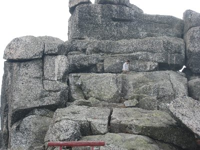
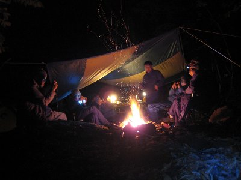
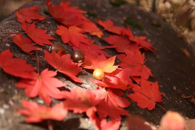
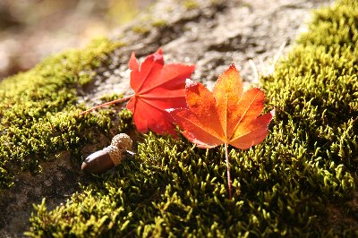

秋キャンプ小川山 | 2008年10月 |
|---|---|
毎年恒例の秋キャンプ（秋にしか行っていないかも・・）と言えば、通称小川山キャンプ場。（正式には廻り目平キャンプ場） 野辺山から東南にあるこの場所は、標高も高く紅葉もちょっと早い。 今回は7名＋隠れキャラ２名のイベントでした。 土曜の10時位に現地着。テントで場所を確保した後に、ボルダー組とハイキング組みと分かれました。因みにボルダー組はきっかーのみ。先行して入っているRyuuさんとイヅカワさんと合流するようです。私はハイク組なので、そちらのリポートを。 | |
 きょうはちょっとガスって見えないな〜 |  金峰山東肩のケルン |
| 今回の目標は百名山でも知られる金峰山。私は以前、キャンプ場からテクテク歩いて登ったことがありますが、今回は簡単に大弛峠からスタートです。ここからだと約２時間、ほぼ高低差なく行けます。 出発時間が遅くなったのもあり、ちょっと足早に金峰山を目指します。とりあえず朝日岳山頂でお昼。う〜ん、なんか雲が出てきたなー 周辺の紅葉もしているのか、していないのかわからない。でも、イマイチって感じ。 | |
|  五丈岩にチャレンジ中 |  夕食。旨そうでしょう〜 |
| 文章も足早に。13時45分金峰山（標高2599m）到着。お茶をしながら五丈岩にチャレンジするも悲しくもリタイヤ。空は曇ったままだったが、以外に遊んで時間を費やしてしまった。15時前くらいに金峰山を後にして、急いで下山。眺望が良いはずの金峰山だが、曇っていて眺望は望めず残念。 キャンプ場に戻った頃には、辺りは真っ暗。買出し組と火起こし組に別れ、夕食の準備を始めます。Ryuuさんとイヅカワさんは日帰りだったので既に帰路につき、会うことはありませんでした。私とYottaさんで焚き火を起こしていると、sugarがHotワインを作り、体を温めると称してチビチビ頂きました。 | |
 鍋を写すの忘れました。 |  焚き火って癒されますよね |
| 買出し組の帰還とともに夕食の支度。今夜は水炊き鍋とお好み焼きだそうです。鍋はキノコたっぷりと。イカソーメンでとり合えず一杯やりながら、夜の宴会はスタートしました。 温かい鍋は良いですね〜 お好み焼きもソースの香りが堪りません〜 最後は焚き火を囲みながらマシュマロ焼いたりしてのんびりと。 やっぱり、焚き火を見ていると癒されるな〜 今夜はそんなに寒くないし。 | |
 なにやら撮ってますが・・ |  上を見上げると紅葉綺麗です |
| 翌朝、朝食を済ませ、軽く後片付けをしてから周辺の散策に出かけました。今日は全員で紅葉撮影大会。 紅葉今一歩ながらも、赤や黄色に染まった木を見つけると、パシャパシャと撮りまくり。 川沿いを歩きながら、川の流れや落ち葉を撮影。自然からの癒しを受けながら、だらだら散策。せかせかしないで、のんびり過ごせる時間って大事ですよね。 一泊二日のキャンプですが、癒されました〜(^^♪ | |
|  |  |
| 写真＆コメント ｂｙべっしー | |